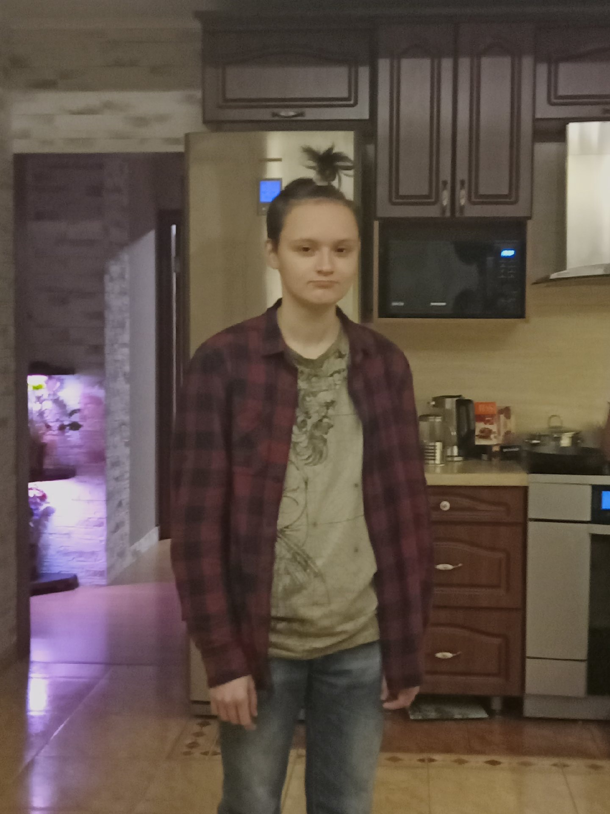

Какой то мужик
Ну вот, Алан Рейх, и подходит к концу твое нахождение в Тюмени и раше в целом Дальше - больше, новые возможности, новые знакомства и т. д. (Подальше от Едра к счастью) За все время проведенное здесь и с нами в принципе ты сделал очень многое, и прошел через многое Пожил в карманах, выпил пива, сдал ЕГЭ, починил мне obs, купил впн, удалил невообразимое количество сообщений (больше только голосов за ЕР) Ты прошел на своем пути много трудностей и искушений, которые не сломили тебя и позволил себе не совершить множество ошибок Ты не сел в Димину двенашку, не смотрел на сиськи Лизы Галимовой, не устроился работать (в Чико), не сходил на страшный квест В общем перечислять можно бесконечно, в любом случае это все, впереди абсолютно другая, можно сказать новая жизнь и я желаю тебе в ней удачи Алан Рейх, с днем рождения!
Открыть →